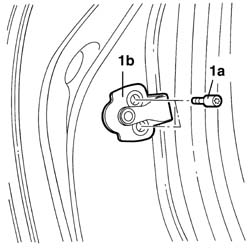

7010B14 Rear side door catch STRIKER - R.R.
- Path
- Procedures > 70 FITTINGS > 7010 passenger compartment rear side doors > 7010B REAR SIDE DOOR MECHANICAL LOCKS > 7010B14 Rear side door catch STRIKER - R.R.
- Kind
- repair procedure (removal / refitting; the operation number is the code)
- Applies to
- all engines; all production periods
- Interactive page
- https://sloeber94.github.io/elrnDB-lThss/en/#/80019
Applies to: all engines; all production periods
 Removing
Removing
 Refitting
Refitting1. Open the door, undo the fixing bolts (1a) and remove the striker (1b).

Applies to: all engines; all production periods
Refitting
Removing- Position the striker and screw in the fixing bolts without tightening them to torque.
See in Op. 7010A10 Rear side DOOR - Adjustment of striker and adjustment of seal if necessary